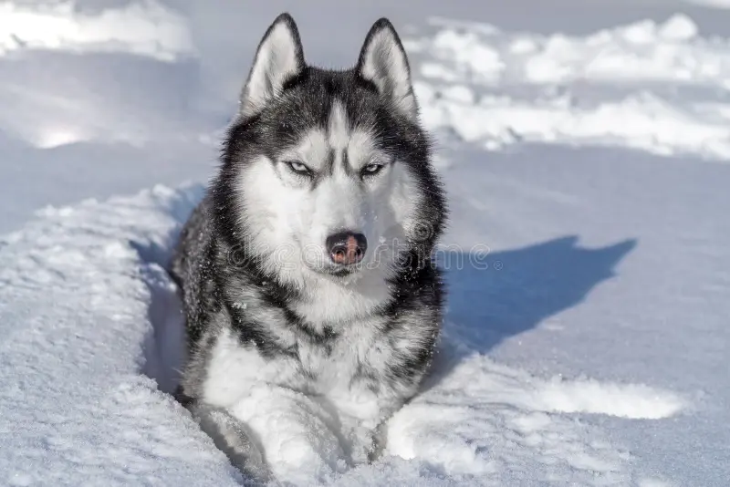
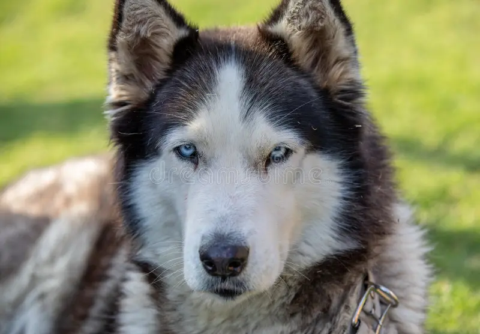
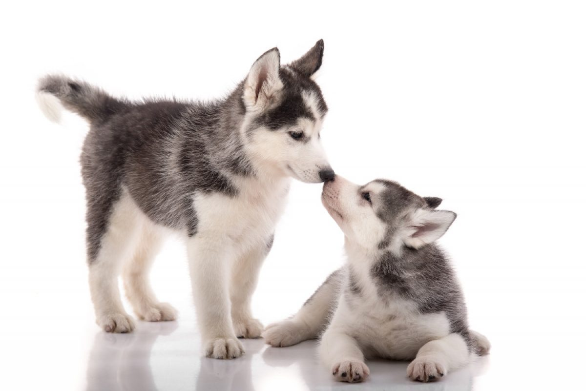

Navbar
Home
Position
Huskie

Siberian Husky
Espíritu de la Tundra
Ojos de hielo, alma de lobo. El Husky Siberiano nació para correr kilómetros sin fin bajo la aurora boreal.

Mirada única
Ojos Bicolores
La heterocromía es su rasgo más misterioso: un ojo azul hielo, otro ámbar dorado. Cada Husky es irrepetible.

Cachorro Husky
Pequeño pero Veloz
Desde cachorros muestran su espíritu salvaje. Curiosos, juguetones y llenos de energía desde el primer día.
01 / 03
←
→